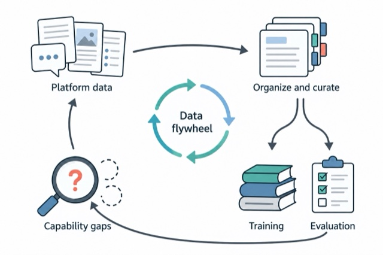

TikTok data flywheel
Details
The flywheel connects platform-wide data with foundation-model training and evaluation. Shared infrastructure supports data discovery, curation, and coverage analysis for both general capabilities and safety; evaluation gaps guide the next round of data development.
A platform-wide data flywheel supporting general model capabilities and safety. Concept illustration, without specific data sources, implementation details, or measured results.
Related research